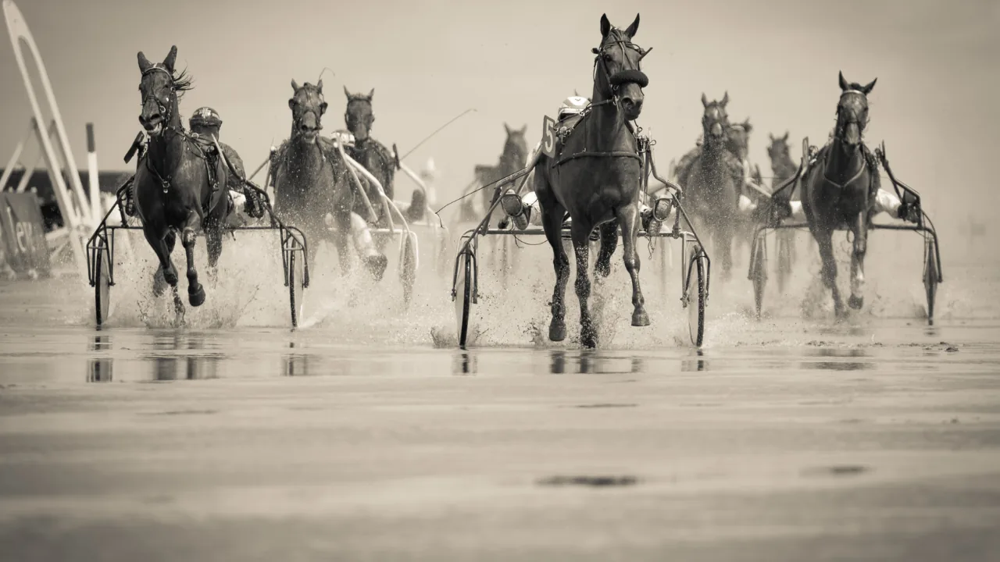

Toutes les semaines, les mêmes mots reviennent dans les programmes et les analyses de quinté : déferré des quatre pieds, plaqué des antérieurs, déferré des postérieurs. Ce sont les indices les plus concrets dont dispose un parieur sur la manière dont un trotteur va aborder sa course — et pourtant les sigles (D4, DA, DP…) restent la partie la plus personnalisée du programme. Voici ce qu'il faut comprendre pour les utiliser vraiment.
Un trotteur de course porte normalement un fer cloué sous chaque sabot. Il protège la corne — surtout à l'entraînement, où les allures se répètent sur des kilomètres — et apporte un peu de poids et d'adhérence. En course, ce poids devient un compromis : plus un pied est lourd, plus il coûte d'énergie à soulever à chaque foulée, mille fois par minute.
Déferrer un cheval, c'est retirer ses fers avant l'épreuve, le plus souvent le jour même, sur les antérieurs, les postérieurs ou les quatre pieds. L'idée est la même que pour un sprinteur qui change de chaussures : un pied plus léger se déplace plus vite. Les écuries parlent couramment d'un gain de quelques dixièmes de seconde à une seconde au kilomètre — une estimation d'entraîneur, pas une mesure officielle, qui dépend du cheval, de la piste et de la distance.
Dans un programme de courses, la ferrure se lit toujours de la même façon : la lettre D pour « déferré », suivie des pieds concernés. Voici le tableau complet des configurations que vous rencontrerez :
| Sigle | Lecture | Ce que ça change en course |
|---|---|---|
| D4 | Déferré des 4 pieds (pieds nus) | Maximum de légèreté et de vélocité. Réservé aux chevaux habitués : sans la sensation du fer, certains deviennent fautifs. Rien à perdre sur un parcours de vitesse, tout à gagner si le cheval est équilibré. |
| DA | Déferré des antérieurs | Le devant s'allège : la foulée prend de la fréquence, utile pour tenir une place en tête ou accélérer dans la ligne. L'arrière garde son poids, ce qui aide à ne pas perdre l'équilibre. |
| DP | Déferré des postérieurs | Le derrière se libère pendant que l'avant garde un peu de tenue : souvent utilisé chez un cheval qui a besoin de poids devant pour bien trotter. Une configuration de confort avant tout. |
| P (ou plaqué) | Plaqué des antérieurs / postérieurs / 4 pieds | Pas de déferrage complet : on remplace le fer par un modèle plus plat, souvent en aluminium. Un compromis — on gagne du poids sans totalement changer la sensation du pied. |
| Cale | Cale sous le fer | On ajoute plutôt qu'on retire : la cale répartit la pression ou corrige l'usure. Un cheval « calé » ne demande rien de spécial à sa course. |
| Fer à neige / fer spécial | Ferrure adaptée à la piste | Piste humide, détrempée ou collante : le programme indique parfois une ferrure particulière. Un paramètre météo, à lire avec la météo justement. |
Les configurations combinées existent : « plaqué antérieurs, déferré postérieurs », par exemple — soit le meilleur des deux mondes pour un cheval de tête qui doit tenir 2 700 mètres.
Un entraîneur ne défère pas par caprice : la ferrure est une intention de course. Quelques repères à retenir :
Un déferrage dans une course à vitesse (courses de 2 100 ou 2 850 mètres demandant du sprint) annonce un cheval envoyé devant, ou un cheval que l'on veut libérer dans le dernier virage. Un déferrage en cours de tenue dit plutôt : on cherche l'équilibre et la régularité, la jument ou le cheval tiendra son effort.
Surtout, la ferrure se paie parfois comptant : un cheval déferré a le pied plus exposé. Sur une cendrée dure, après plusieurs sorties pieds nus, la corne s'use — c'est pourquoi un même partant alterne rarement deux déferrages rapprochés, et pourquoi un retour au fer raconte aussi quelque chose (retour prudent, piste exigeante).
Et gardez le bon réflexe : un sigle n'est pas un pronostic. Deux chevaux déferrés des quatre pieds n'ont rien de commun à part un sigle — la forme, la musique, les cotes et le déroulement de la course pèsent davantage.
Première lecture : qui est déferré/plaqué dans la course du jour, et par qui ? Un entraîneur qui défend son cheval sur sa configuration habituelle (déjà déferré à ses deux dernières sorties) n'étonne personne ; une première, elle se remarque — c'est un signal que l'écurie voit sa course.
Seconde lecture : croisez avec la cote. Un cheval déferré et bien coté = signal troublant. Un cheval déferré ignoré du public = valeur possible. Un cheval dont le déferrage disparaît du programme = parfois mauvais présage.
Exemple vécu : dans ce Prix Mélusina du vendredi 27 novembre, Kaliakie Phédo présentait une configuration combinée (plaquée des antérieurs, déferrée des postérieurs) alors qu'elle était la favorite des 17 médias : quand la ferrure suit le projet du pronostic, les deux sigles se confirment mutuellement.
Dans le programme officiel (téléchargé sur le site du PMU ou présent sur les stands) : une colonne dédiée à chaque partant, sous le nom et avant les performances. Sur les sites de pronostic : la page de la course de la journée affiche parfois la ferrure à l'aide des codes de chaînes de courses (DDA, DDP, DA, DP, D4, PDD…) — chaque lettre décrit une configuration sur les trois dernières sorties, de la plus récente à la plus ancienne.
Dans nos pronostics quotidiens du quinté, la ferrure couleur est rappelée dans l'analyse dès qu'elle fait partie du projet de course — ainsi que dans le récapitulatif des partants.
Que veut dire déferré des quatre pieds (D4) ?
Le trotteur court pieds nus, sans aucun fer. Il gagne en légèreté de foulée mais supporte moins bien les pistes dures : cette configuration se réserve aux chevaux qui sont habitués et équilibrés.
Quelle différence entre DA et DP ?
DA (antérieurs) allège l'avant pour accélérer la foulée et aider un cheval à aller de l'avant ; DP (postérieurs) libère l'arrière tout en gardant un poids d'appui devant, souvent pour un cheval qui manque d'équilibre à l'avant.
Le plaquage, c'est pareil que le déferrage ?
Non. Le plaquage remplace le fer par un fer plus plat et plus léger (souvent en aluminium), alors que le déferrage retire tout. Le plaquage est un compromis plus doux, mieux accepté par les chevaux craintifs.
Un cheval à D4 est-il automatiquement un favori ?
Non — c'est un indice favorable, pas une assurance. Il faut le croiser avec la forme récente (musique), la distance connue du cheval, le déroulement de la course et sa cote réelle.
Peut-on voir le même cheval déferré deux courses de suite ?
Oui, si son écurie a l'habitude et que son pied le supporte, mais la plupart des entraîneurs ménagent leurs chevaux : enchaîner les sorties pieds nus fatigue la corne, surtout sur cendrée.
Notre guide « Lire un pronostic de quinté » décrypte les autres termes du programme (musique, base, tocard, corde, cotes). Si vous construisez vos tickets, nos règles et formules de jeux complètent le tableau. Et pour vérifier que ces indices servent à quelque chose, le track record publie nos résultats depuis septembre.
Jouez avec modération
Servez-vous de ces repères pour mieux lire une course, pas pour miser plus. Fixez un budget et tenez-vous-y. En cas de difficulté : Joueurs Info Service — 09 74 75 13 13.